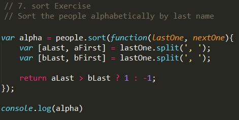

Drum Kit

Data Key HTML Attribute

Data attributes are just something we make up so we can hook it up to our data later. For example 'data-attribute = cake' or 'data-attribute = 63'
Audio HTML Element
audio.play() Method
audio.currentTime Property
Can set this value to be 0, or any other value. By setting it to 0 it allows us to continually mash the button and the sound keeps generating. Instead of having to wait for the sound to end
Timing Events to CSS Transitions
The keyword 'this'
check this against the keyword this rules, I think because 'this' is contained within the nearest parent object which is keys. removeTransition is called within an object, the object is keys in this case. Thats why this has the value of keys
Full Program

JS Clock
Transform pivot point
By default when you transform something, in this case rotate, the pivot point is in the center of the object.As you can see in the image above
We want to put our pivot point on the very end of the clock hand. In CSS this pivot point is called the origin. We use the transition-origin property and use it as a percentage to move the origin along the object, in our case 100% moves it to the very end as we need
Using page up / down in dev tools to increment our transform rotate
Dev tools also has a built in cubic-bezier editor
setInterval
Executing a function at a set interval

new Date(), now.getSeconds(), now.getMinutes(), now.getHours()
Full program
CSS Variables
May be thinking, we already have CSS variables with SASS, but its new because CSS variables can be updated with Javascript. And when you change the value of that variable, everywhere on the page that references that CSS variable gets updated as well. Compared to SASS where variables get changed at compile time, and once compiled, you cannot change it.
The way CSS variables work is you first declare them on an element, or in our case, :root which is the highest you can get
Notice how these elements all have a name attribute that is the same as the CSS variable name
Defining Variables
Using a CSS Variable
Use the keyword var and pass it the value
Nodelists
querySelectorAll will produce a nodeList, which looks like an array but isn't. An array has built in methods like map, reduce, filter. But if you open the prototype of the nodeList we only have a few methods and properties listed here
Now compare that to the prototype of a regular array as shown below, take a look at all those handy built properties and methods
You can actually convert a nodeList to an array, but forEach has just been recently added to nodeLists as well
Addendum: You can use console.dir() on the object to get a list of its properties and methods. If you do this, you will notice that nodeLists lack many of the methods that make arrays - arrays. For example nodeLists are missing map, reduce, filter on their __proto__
Suffixes
Here the program is simply printing the value of the blur, background color, etc. When we grab these values out such as "spacing: 10px". We can't just grab the value 10, we also need the suffix 'px' for '10px'.
Suffix
The way we solve this is with a data-attribute
The data-attribute actually stores all of our custom data attributes as an object
object.dataset
We get access to this data-set object using object.dataset
We can drill down even further, instead of getting all of our custom datasets properties and values back, we can just get a specific one as shown below
Final
Array Cardio part 1
Filter
Filter the way filter works is we pass it a function, and that function loops over every item in the array
For filter, anything with the value of TRUE gets added to the new array, a value of FALSE and it will not be added - in effect removing it
Exercises
Map
Map transforms the values within an array and returns a new array of the same length. I like to think of map as a factory machine that takes in a raw material, stamps it, and kicks it out the other end. Map will always return the same amount of items you give it
array.prototype.sort()
Can sort items using -1 and 1
Reduce
Reduce allows you to build something on every single item. Have you ever done something like this?
This is pretty similar to how reduce works. Reduce is just a much clearn way to do that. Reduce will give you a running total.
Chaining Map and Filter
ES6 Variant

People Dataset
Magic

Reduce Exercise
Array Cardio Day part 2
array.prototype.some() and array.prototype.every()
.some() is at least one person 19?
.every() is everyone 19?
Our Dataset
Some
Every
array.prototype.find()
Find is similar to filter but instead of returning you a subset of an array, it returns the FIRST item it finds
array.prototype.findIndex()
Locates an item within an array
Locating an item from an array and then removing it
nodeList vs Array
Must know Dev Tools Trick
Breakpoints
Will trigger the console where this breakpoint has been inserted, and pause the program
console.dir()
Gives you a drop down of all available mehtods and properties on something
console.group()
Use console.group to start it and console.groupEnd() to end it. Can also switch out console.group with console.groupCollapsed so by default the items are collapsed.
console.count()
console.time()
console.table()
Can take an array of objects, assuming they all have the same properties, in this case name and age, it will put it in a nice table for you.
Intro to Ajax - type ahead feature
AJAX or Asynchronous JavaScript and XML is a way to use JS to talk to a webserver, get back a response, and update a web page all without loading a new page. An example of asynchronous JavaScript would be scrolling to the bottom of your twitter feed where it loads in more tweets indefinitely. Or google maps, how it continuously updates as you scroll around to new areas of the map without having to reload the page. On reddit users can vote posts up or down, helping to move the most popular posts to the top of the home page, when you vote you don't leave the current page - but your vote is sent to the reddit server using AJAX. New content without loading new web pages.
Treehouse intro to AJAXAjax - using a new API in the browser called fetch. If you have used HTML or XMLHTTP request before using something like jquery.json or even a 3rd party library like axios.
It doesn't return the data, it returns what's called a promise. So the way you work with a promise is you call .then on it which will return a blob of data.
.fetch
A basic promise, shown below, again notice its not returning the data but the state of the promise: either resolved or rejected
Notice how it shows us the promise state, in this case resolved
.then
Notice how it gives us back a response object

Whats going on here is the data fetch gets back, it doesn't know what type it is just yet. It could be an image, some html, music etc. .json itself returns another promise So we can convert it with ...
.json

Assigning our data from JSON to the cities variable
.match and regex
Putting variable into regular expression.